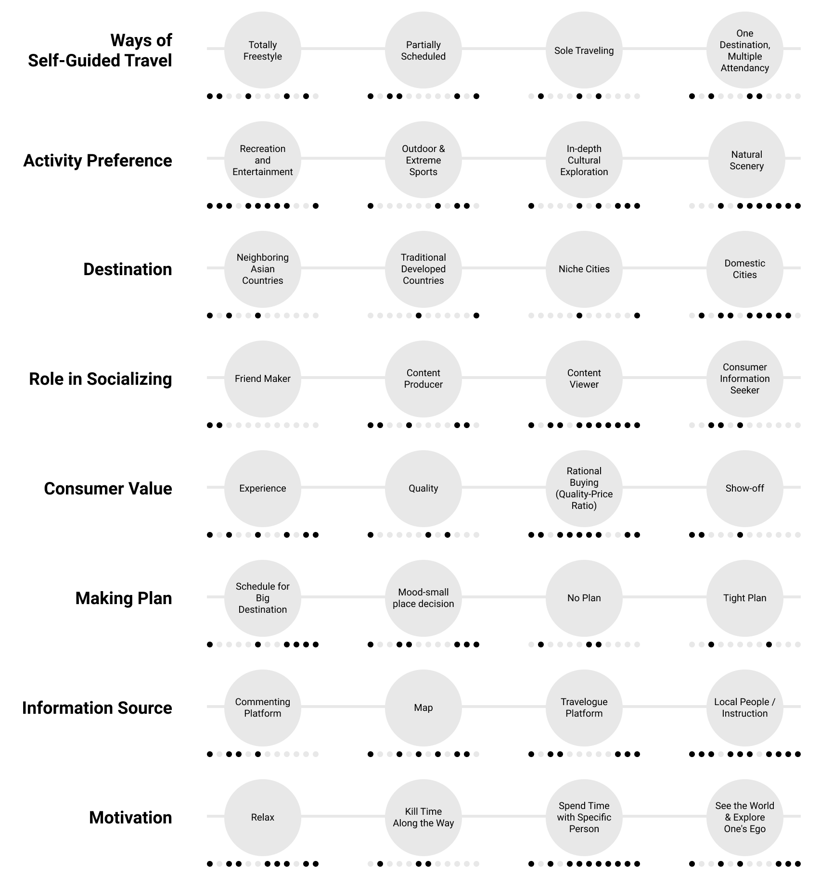

Primary RESEARCH
Towards the User Group: What Kind of Personalities are Our Typical Users? What are the Problems Our Users are Facing?
To further understand the users, I collected qualitative data and analyzed with coding. 12 User interviews were conducted, and participants were selected based on the following criteria: 1) Chinese GenZ, 2) live in tier 3 and 4 cities, 3) have been through at least 1 self-guided travel.
After coding the user data, I enriched the key variable table, and statistically evaluated each class in variables by counting the number of time they appeared in the user data.
To figure out the user pattern (persona), I selected reasonable classes of each variable. However, the persona is not settled yet, I still need the information of pain points (problems) to elaborate usable personas.

To understand the pain points our users are facing, I analyzed the same data with coding: tagging -> categorizing tags -> finding out patterns of tags.

The key takeaways are:
- Special characteristic: Chinese GenZ are inhabitant of information era. More GenZs compared with other generations prefer to visit a city multiple times, or travel alone.
- Altitude: Values a travel experience by enjoyment, creativity, and depth; Willing to spend money and meanwhile valuing service quality.
- Way: Prefer self-guided travel and convenient transportations.
- Location: Prefer to travel abroad (short trips to Asian countries) and leisure trips (nearby cities).
- Duration: Preferred travel duration is roughly 5-7 days.